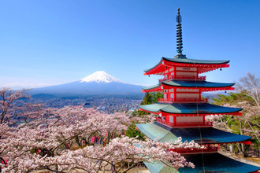
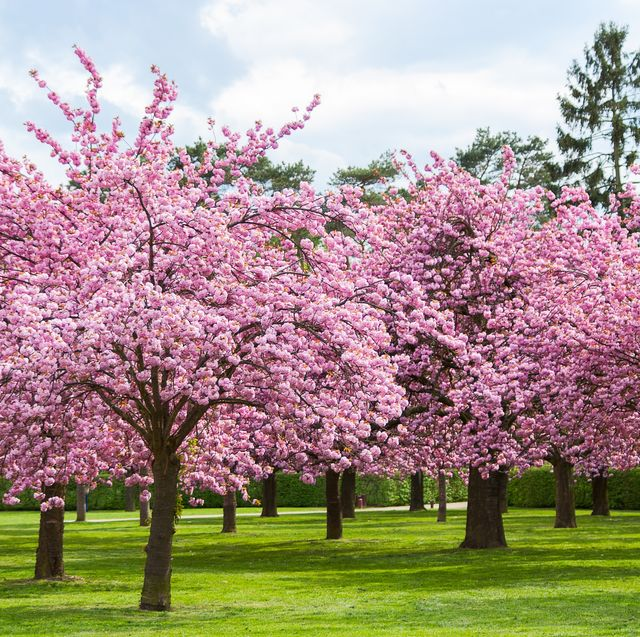
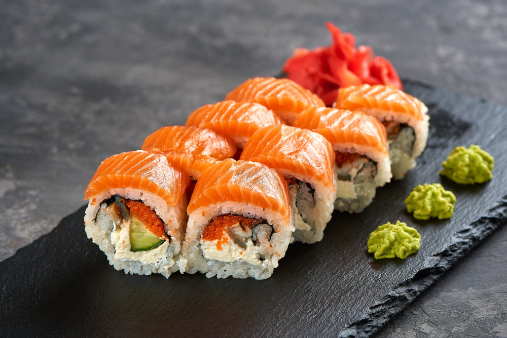

This is a webpage all about Japan and its' beautiful scenery and culture.
Japan is located in asia and is an island seperated from the mainland. It's closest "bordering" country is South Korea. Cherry blossoms, sushi, and their famous architecture is what you will find most known in Japan.
Cherry blossom trees and iconic japanese architecture are the most common sight seeing hotspots.
| National Flag |
Red/White | |
|---|---|---|
| National Flower | Cherry Blossoms |  |
| National Fish | Koi | |
| National Dish | Sushi |  |
Email: crhaley@gmail.com
Phone: (615)-861-9912